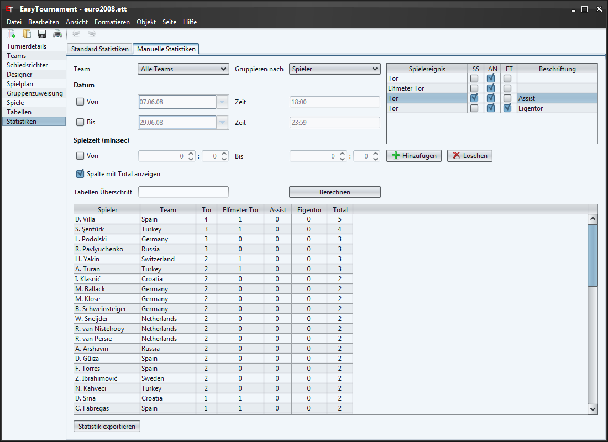

Falls Sie die Spielberichte ausgefüllt haben, lassen sich hier alle Spielereignisse nach Belieben auswerten.
Mit einem Klick auf die jeweilige Spaltenüberschrift lassen sie die Tabellen sortieren.
Über die zwei DropDown-Listen können die Ereignisse pro Team oder Spieler gefiltert und gruppiert werden.
Im Datumsbereich können die Spiele nach dem Datum und der Zeit gefiltert werden. Gleich darunter im Abschnitt Spielzeit können die Statistiken nach der Spielzeit ausgewertet werden (z.B. wenn man nur die Tore der ersten Halbzeit auswerten möchte).
Die Tabellenüberschrift wird beim Drucken und beim HTML-Export als Titel gesetzt.
Mit den entsprechenden Schaltflächen (Hinzufügen, Löschen) lassen sich Spielereignisse hinzufügen, welche man auswerten möchte.
In der Spalte "Spielereignis" kann über eine DropDown-Liste das Ereignis gewählt werden.
Mit einem Häkchen bei SS können sekundäre Spieler ausgewertet werden (z.B. Assists).
Ein Häkchen bei AN (Anzahl) bedeutet, dass ausgewertet wird, wie viel Mal ein Ereignis aufgetreten ist und ohne Häkchen die Anzahl Punkte (z.B. Football: Mit Häkchen wird bei zwei Touchdowns 2 ausgegeben und ohne Häkchen 12 (2x 6 Punkte)).
Das letzte Häkchen FT steht für "falsches Team". Ist es gesetzt, dann wir ein Ereignis gezählt, wenn das Ereignis z.B. für das Team A aber der Spieler von Team B ist (z.B. Ein Eigentor beim Ereignis Tor). Dieses Häkchen hat keinen Einfluss auf das Resultat, falls ein Häkchen bei SS gesetzt wurde.
In der Zelle "Beschriftung" kann eine alternative Spaltenüberschrift Gesetzt werden. Ist sie leer, wir der Spielereignis-Text angezeigt.
Um die eingestellte Statistik anzuzeigen muss auf die Schaltfläche "Berechnen" geklickt werden.
Zusätzlich lassen sich die Statistiken über die Schaltfläche "Statistik exportieren" als CVS (z.B. für Tabellenverarbeitungsprogramme wie MS Excel) oder HTML Datei speichern.